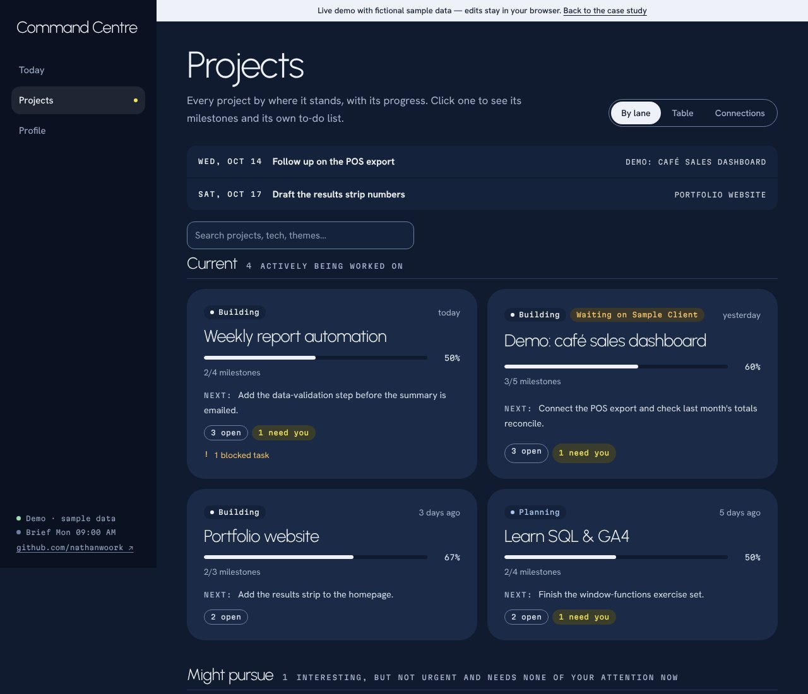

The problem
Too many projects, no single view
With several projects running at once — job search, side ventures, client-style work — the status of each one lived in a different chat, folder or note. Every morning started with re-reading everything to work out where things stood.
I wanted one screen that tells me the state of everything, and one clear next step, before I open anything else.
How it works
What’s due first, everything else one click away
- The due strip: today’s follow-ups and the next dates, at the very top — the one place the yellow accent appears.
- Four big numbers: current projects, tasks this week, decisions only I can make, and who I’m waiting on.
- Focus: the three tasks to do first, ticked off right there.
- Your call and Waiting on others: decisions that need me, and follow-ups owed by someone else, each with a date.
- Current projects: one line each with its next step and progress; the full written 9am brief folds away underneath.


The new look
Rebuilt in my own design language
The first version worked but looked like a generic dashboard. I rebuilt it on the Woo Design Language, the house style I now start every project from, using its Midnight register: deep navy, hairline Urbanist numerals, Hanken Grotesk for reading and Martian Mono for labels.
- One yellow moment per screen — whatever is due — so the eye always lands in the right place.
- No emoji and no decorative icons; typographic arrows and mono labels do the work.
- Every text colour checked to hold 4.5:1 contrast, with a light theme that follows the device setting.
- A profile page with a 15-week activity heatmap of commits, finished tasks and file changes.
Design choices
Built to be trusted, not just looked at
Private by default
Runs on my own PC. Real projects and tasks stay in a local folder that's never uploaded; only the empty scaffolding is on GitHub.
Safe saving
The local server can only write two files (tasks and profile), checks where each request comes from, and refuses everything else.
Hands-off upkeep
A background helper restarts the dashboard if it stops and refreshes the project handover every 10 minutes.
Two takes
Same brief, two AI build teams
I gave a similar brief to two AI tools and kept both. The Claude build became this command centre: live status and next steps. The ChatGPT build became Daybook, a record keeper for documentation, handovers and files. Comparing them taught me where each tool is strong — and how to write a brief that gets the result you actually need.
The code (the dashboard itself with fictional sample data, never my real projects) is being prepared for GitHub.